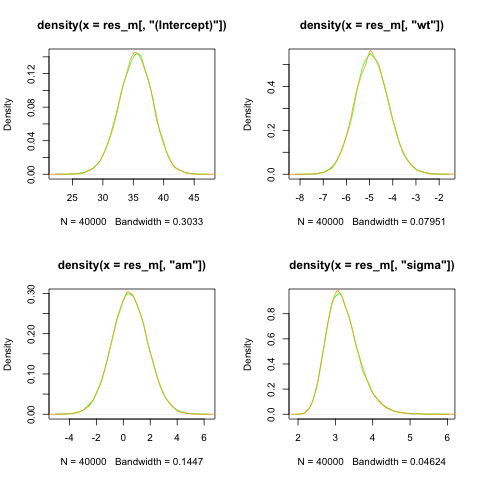
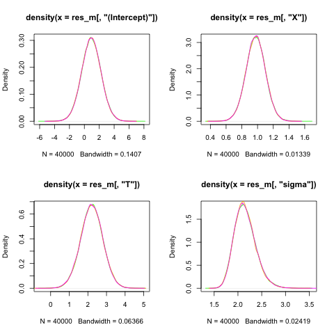

normal regression
keywords: comparison with rstanarm; Normal regression; broadcasting.
this is just code, needs work.
################################################################################
# This file fits a Bayesian linear regression (Gaussian) using public data set.
#
# It uses three different R Bayesian libraries:
# 1. rstanarm (assumed the default use case)
# 2. nimble - for comparison
# 3. tensorflow - for comparison
#
# Note: rstanarm does some manipulation (centering and prior adjustment) which
# need reflect in the the other packages
# Documentation is currently very thin and code messy
# chains need longer to run shorter for ease of testing
#
# Many libraries need installed and tensorflow can be problematic
# Once the libraries are installed then the whole file can be sourced
# and the output is "plot_negbin.pdf" which is a comparison of parameter
# estimates
#
# F. Lewis 31-OCT-2025
################################################################################
data(mtcars)
# Rescale
# note for models that do internal predictor centering then need location shift back for intecept
# i.e y = a + b*(x1-mean) + c*(x2-mean)
# so want a at x1=0 and x2=0 so E(y) = mean(a) + mean(b)*-mean(x1) + mean(c)*-mean(x2) etc.
# this centering does not appear to be used in neg bin - as y is counts seem reasonable
# observe lambda*t = a + b + c but want just lambda, i.e. Y=lambda*t so lambda = Y/t
# log(lambda) = a + b + c + log(exposure)
# P(X=x) = lambda^x exp(-lambda)/x! lambda = lambda2*t
#
default_prior_test <- stan_glm(mpg ~ wt + am, data = mtcars, chains = 1)
# Estimate original model
glm1 <- glm(mpg ~ wt + am,
data = mtcars, family = gaussian)
# Estimate Bayesian version with stan_glm
stan_glm1 <- stan_glm(mpg ~ wt + am, data = mtcars, family = gaussian(),
prior = normal(0, 2.5),
prior_intercept = normal(0, 5),
seed = 12345,
warmup = 10000, # Number of warmup iterations per chain
iter = 20000, # Total iterations per chain (warmup + sampling)
thin = 1,
chains = 4) # Thinning rate)
res_m<-as.matrix(stan_glm1)
summary(res_m[,"(Intercept)"])
summary(res_m[,"wt"])
prior_scales<-prior_summary(stan_glm1)
# get the predictor adjusted scale - stating priors explicitly so no autoscaling
beta_prior_scale<-prior_scales$prior$scale
# THE ABOVE NEEDS FIXED - if no priors are given this will be incorrect
# note - also hard coded 5 in stan below which needs fixed
# aux is always re-scaled -next line always needed
sd_prior_scale<-prior_scales$prior_aux$adjusted_scale #need 1/sd_prior_scale for exp
# log(l*n) = a + b, log(l)+log(n) =
################################################################################
## use base rstan
## the below is from gemini
# Load necessary libraries
library(rstan)
library(ggplot2)
library(bayesplot)
library(dplyr) # For data manipulation if needed, e.g., tibble
# Set Stan options for better performance and to avoid recompilation
rstan_options(auto_write = TRUE)
options(mc.cores = parallel::detectCores())
# --- 1. Simulate data for the Negative Binomial Regression Model ---
# (Since no data is provided, we simulate a dataset that matches the description)
set.seed(12345)
# --- Define the Stan model as a string in R ---
stan_model_string <- "
data {
int<lower=1> N; // Number of observations
int<lower=1> M; //number of predictors excl intercept
array[N] real<lower=0> y; // Response variable (counts)
vector[N] wt; // Continuous predictor
vector[N] am; // Binary predictor
//Hyperparameters
array[M] real<lower=0>rescaled_sd;// standard dev for predictors
}
transformed data {
vector[N] wt_centered;
real mean_wt=mean(wt);
vector[N] am_centered;
real mean_am=mean(am);
wt_centered = wt - mean_wt; // Center in transformed data block
am_centered = am - mean_am;
}
parameters {
real alpha; // Intercept
real beta_wt; // Coefficient for roach1
real beta_am; // Coefficient for treatment
real<lower=0> phi; // Negative Binomial overdispersion parameter
}
transformed parameters {
array[N] real mu; // Log of the mean parameter
for (i in 1:N) {
// linear model
mu[i] = alpha +
beta_wt * wt_centered[i] +
beta_am * am_centered[i] ;
}
}
model {
// --- Priors ---
// Weakly informative priors for coefficients and intercept
alpha ~ normal(0, 5.0); // Prior for intercept
beta_wt ~ normal(0,rescaled_sd[1] ); // Prior for roach1 coefficient
beta_am ~ normal(0, rescaled_sd[2]); // Prior for treatment coefficient
phi ~ exponential(rescaled_sd[3]); // this is actually 1/ rescaled scale
// --- Likelihood ---
// Negative Binomial likelihood, using the log-link function for the mean
y ~ normal(mu, phi);
}
generated quantities {
// Can include posterior predictions or log-likelihood here if desired for model checking
real intercept_0;
intercept_0=alpha + beta_wt*-mean_wt + beta_am*-mean_am;
}
"
# --- 3. Prepare data for Stan ---
# The data needs to be provided as a list for rstan::stan()
stan_data <- list(
N = nrow(mtcars),
M = 3, # number of passed hyperpriors
rescaled_sd=c(beta_prior_scale,1/sd_prior_scale),# 1/ as prior uses rate
y = mtcars$mpg,
wt = mtcars$wt,
am = mtcars$am
)
# --- 4. Fit the Stan model ---
# Use rstan::stan() to compile and sample from the model
fit <- stan(
model_code = stan_model_string,
data = stan_data,
chains = 4, # Number of MCMC chains
warmup = 10000, # Number of warmup iterations per chain
iter = 20000, # Total iterations per chain (warmup + sampling)
thin = 1, # Thinning rate
seed = 12345, # For reproducibility
control = list(adapt_delta = 0.95, max_treedepth = 15) # Adjust for sampling issues if needed
)
# --- 5. Extract main parameters and produce density plots ---
res2<-extract(fit,par=c("alpha","beta_wt"," beta_am","phi","intercept_0"))
